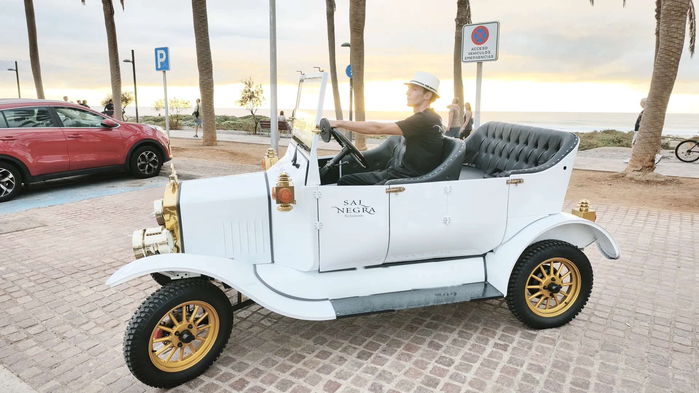
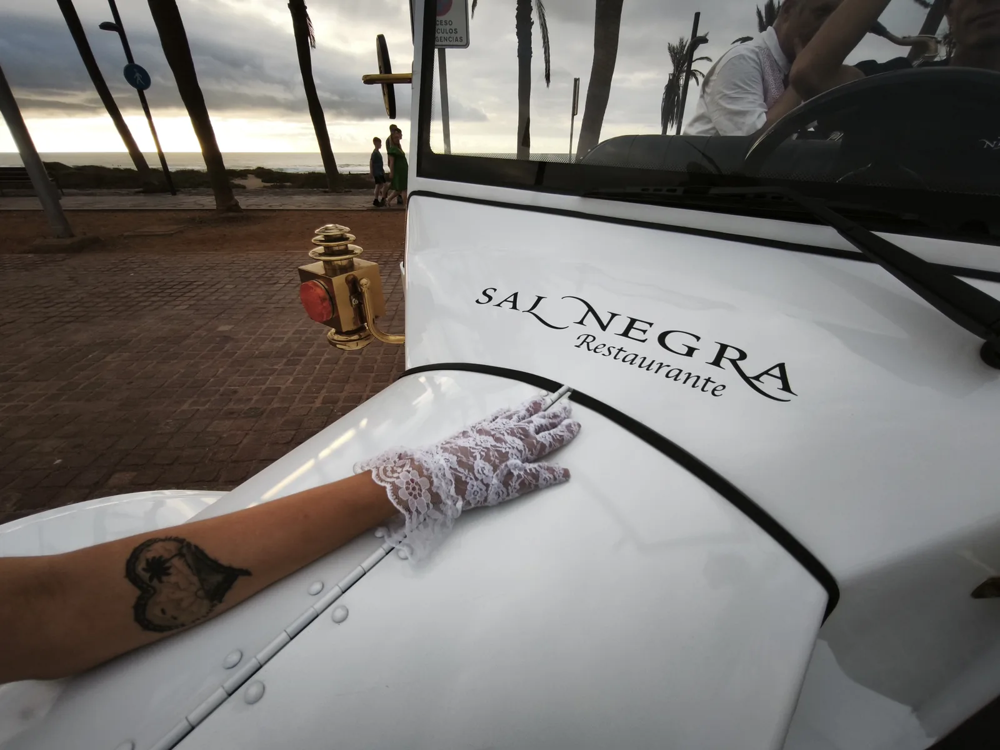
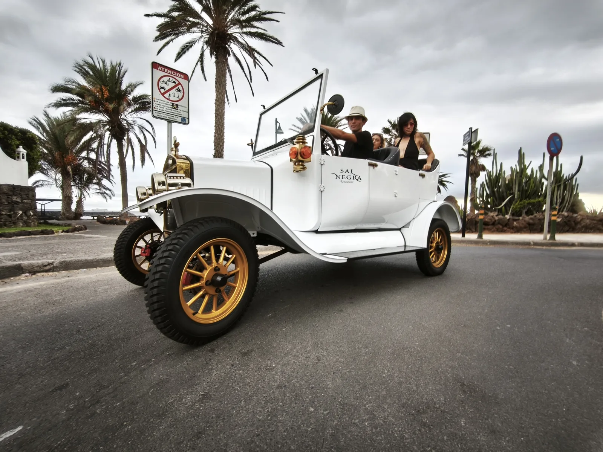

L'invio della richiesta non conferma la prenotazione. L'esperienza è confermata solo dopo la verifica della disponibilità e il pagamento anticipato.
Pickup 17:30 · rientro verso le 19:30
La luce del tramonto lungo la costa, l'arrivo al Sal Negra con il sole ancora sul mare.
Pickup 19:30 · rientro verso le 21:30
Il paseo all'imbrunire e la cena quando la sera comincia.
Pickup 21:30 · rientro verso le 23:30
Le luci della costa, il ristorante nel suo momento più tranquillo.
L'orario esatto di incontro viene concordato con voi prima della conferma, in base al tramonto, alla stagione e alla disponibilità.
Ci incontriamo nel punto concordato e da lì comincia il Momento: un paseo con la Vintage Car lungo la costa, senza fretta, fino all'arrivo al ristorante Sal Negra, fronte mare.
Dopo la cena, il ritorno è incluso nell'esperienza: stessa auto, stessa calma, fino al punto di incontro.
L'esperienza Vintage è disponibile principalmente nell'area tra Los Cristianos e Playa de Las Américas. Il punto esatto di incontro e ritorno viene confermato dopo la verifica della prenotazione.


Vuoi portare a casa le immagini del vostro Momento? Il servizio fotografico è disponibile su richiesta, supplemento da confermare.
Scrivici data, fascia e menu: verifichiamo la disponibilità e ti confermiamo punto e orario.
💬 Prenota su WhatsAppL'invio della richiesta non conferma la prenotazione. L'esperienza è confermata solo dopo la verifica della disponibilità e il pagamento anticipato.